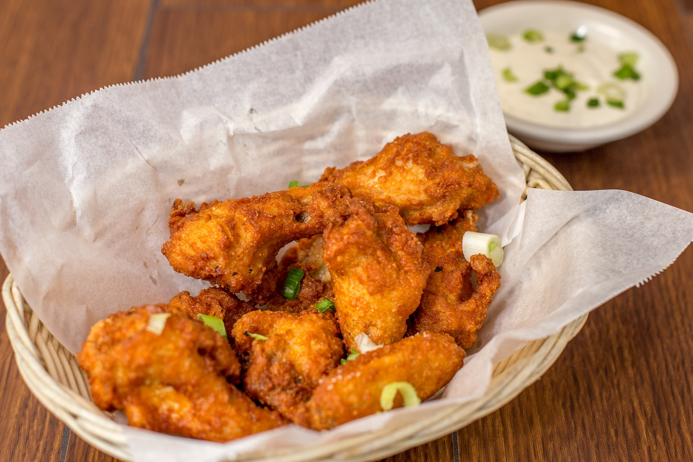

식재료 이모저모 |
|
|---|---|
치킨
치킨이란 닭고기를 조각내어 밀가루 등을 묻히고 기름에 튀긴 요리이다. 현재는 조각내지 않고 튀기거나, 기름에 튀기지 않는 방식의 요리도 치킨이라 불리고 있으며 그 외 다양한 변형들이 만들어지고 있다. 즉, 프라이드 치킨의 줄임말로 시작했지만 튀김 방식이 아닌 새로운 닭요리를 통칭하는 용어로 사용되고 있다. 때문에 치킨과 통닭을 같은 뜻으로 사용하는 사람도 많아졌다. 강냉이와 옥수수를 같은 뜻으로 이해하는 것과 비슷하다. 한국 내 패스트푸드 삼대장인 피자, 햄버거, 치킨 중 압도적인 원탑의 위치를 점하고 있다. 출출해지는 밤을 달래주는 한국인들의 주요 야식 중 하나이다. 밤에 TV나 영화를 보며 먹는 치맥(또는 치콜)은 그야말로 최고의 요깃거리라 할 수 있다. 한국의 프라이드 치킨은 배달 문화와 맞물려 널리 퍼져나갔으며, 다양한 방식과 맛으로 변화를 거치면서 짜장면처럼 로컬라이징된 한국 특유의 음식으로 각광받고 있다. |
|